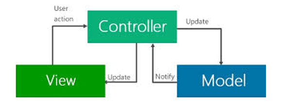

Volt MX Reference Architecture Features
Volt MX Reference Architecture supports the use of Volt MX forms and widgets. You can use these elements to build your app's user interface just as you normally do when developing apps with Volt MX Iris. Under Volt MX Reference Architecture, you cannot use deprecated box-style widgets such as popups, VerticalBox forms, HorizontalBox forms, and box-based templates. You must build your app with FlexForm-based widgets.
To enable the modularization of your app's JavaScript source code, Volt MX Reference Architecture mandates the use of RequireJS and the Asynchronous Module Definition (AMD ) API for loading JavaScript files and modules. Therefore, any code modules you add to your app must follow the RequireJS and AMD conventions.
This section contains the following topics:
- Models, Views, and Controllers in Action
- Components and Volt MX Reference Architecture
- Form Navigation
- Dynamic Module Loading
- Define Namespaces in Apps
- Access Volt MX Foundry Services through Volt MX Reference Architecture
- Use Volt MX Reference Architecture for Volt MX Wearables App
Models, Views, and Controllers in Action
Models, Views, and Controllers work together to provide an app's functionality. The following diagram illustrates how Controllers interact with Views and Models.

The Controller responds to user actions that it receives from its associated View. As stated previously, each Controller is associated with exactly one View. However, Controllers may communicate with any number of Models.
All Controllers have a member variable named View that contains the View for that specific Controller. Views are only accessible from within their corresponding Controllers by using the statement this.View.
Each form, template, or component in an app has an associated Controller and only the individual Controllers can directly access their own Views. However, when needed, Controllers can invoke their parent Controller’s methods by calling the executeOnParent function. This provides both a clean separation of the layers in the hierarchy of Views and a solid encapsulation of each View’s functionality.
With all references to masters removed from the guide, there is no need for this note.
Controllers can also retrieve information from Models, display it in Views, and enable the user interact with it. Based on the user's input, the Controller can send notifications to the Model, which saves the changes onto the data source.
Components and Volt MX Reference Architecture
When you create a component in either a Free Form Java Script or in a Volt MX Reference Architecture project, Volt MX Iris automatically creates one Controller.js and one ControllerActions.js file. Consequently, any component that is created contains Volt MX Reference Architecture modules by default.
Note: From Iris V9 onwards, the ControllerActions.js files in an application are not committed to GIT to avoid any conflicts. If your application was created before Iris V9 release, you must move the ControllerActions.js files to the .gitignore folder manually.
For more information about components, refer the Creating Applications With Components section in the VoltMX Iris User Guide.
Form Navigation
Volt MX Reference Architecture dynamically loads forms at runtime. When a Volt MX Reference Architecture app creates a form, it also assigns the form a "friendly" name that is more readable to humans than the form's ID. A form's friendly name must be unique and it should make sense to the programer or programmers maintaining the app's source code.
Note: Your app can also assign friendly names to templates. But templates are not involved in navigation.
Volt MX Reference Architecture maps the friendly names to the forms in your app. To navigate between forms, an app must create a Navigation object by calling the voltmx.mvc.Navigation function. When invoking the voltmx.mvc.Navigation function, your app passes it the friendly name of the target form. Once the Navigation object is created, the Controller for the currently-displayed form can switch to the target form by calling the Navigation object's navigate method . This activates the Controller for the destination form. When the Controller for the destination form is active, it can then display its View, get data from one or more Models, and so forth. The following code sample illustrates how this is done.
var params = {“title” : “My Title”, “description” : “My description”};
var x = new voltmx.mvc.Navigation(“FormFriendlyName”);
x.navigate(params);
The example code here navigates to a new form whose friendly name is FormFriendlyName. In the call to the Navigation object's navigate method, it passes parameters from the current form Controller to the destination form Controller through the params argument. The params argument is a JavaScript object that is passed to the Controller of the target form. It can contain a small amount of context information for the target form's Controller.
Calling the Navigation object's navigate method creates the target form and its Controller, and then activates the target form's Controller. Your app does not need to call the form's destroy method on the form being navigated away from. In fact, under Volt MX Reference Architecture , it can't invoke the destroy method for any form. Instead, your app calls the voltmx.application.destroyForm method to dispose of forms, their Controllers, and all of their child widgets.
Your app also cannot call the show method on any form and does not need to. Under Volt MX Reference Architecture , the form is the implementation of the View. It can only be directly accessed by the form's Controller through the Controller's View property. Therefore, the Controller can get access to its View with the this.View statement.
Customize Form Navigation
Your app can customize the navigation process by implementing callback handler functions for the target form's Controller events. These events are triggered during navigation and before the target form is visible. Providing callback handler functions for them enables you to customize what happens when a form is navigated to.
For example, if you want to customize the context information the target form receives, you can provide a callback handler function for the onNavigate Event. This is shown in the sample below,
onNavigate : function(context, isBackNavigation)
{
this.context = context;
}
Note: The object that is sent as part of the onNavigate Event is accessible for all form lifecycle events.
The context that is passed with the onNavigate Event of the voltmx.mvc.Navigation Object is available in the navigationContext key of FormController instance.
The following code snippets demonstrate how to access the context from the lifecycle events of forms:
- Navigate from source form to destination form.
var nav = new voltmx.mvc.Navigation("DestinationForm");
nav.navigate({"key1":"value1"});
- Link preShow, postShow, and onMapping Events of the destination form with the appropriate events function defined here.
function preShow()
{
voltmx.print(this.navigationContext);
}
function onMapping()
{
voltmx.print(this.navigationContext);
}
function postShow()
{
voltmx.print(this.navigationContext);
}
//Here, this.navigationContext contains the context that was passed in navigate Method during the navigation from the source form to the destination form.
- In the
onNavigatemethod, your app may need to pause the navigation so that it can load data, or do whatever else it needs to do, by invoking the pauseNavigation and resumeNavigation methods. - You may also want to specify a custom Model for the target form. To do so, provide callback handler functions for the getModel and setModel functions, as illustrated in the following sample code.
getModel : function()
{
this.Model = new CustomFormModel();
return this.Model;
}
setModel : function(newModel)
{
this.Model = newModel;
}
Control Flow of navigate Function
The exact control flow for the navigate function is as follows:
- Get the Controller if it exists already. If not, create it.
- Update the Model with the
Navigationobject's Model. - If it is defined, invoke the target Controller's
onNavigatecallback handler function. - The target Controller shows the form.
Dynamic Module Loading
Volt MX Reference Architecture apps can define distinct modules that contain discreet functionality and load them dynamically on demand. In fact, Volt MX Reference Architecture does this with its own code modules. For instance, under older programming Models, apps loaded all of their JavaScript modules at startup. However, Volt MX Reference Architecture loads them on demand. This both saves memory and decreases startup time.
Using Volt MX Iris, you can create your JavaScript modules consisting of a form and a form Controller The file containing the form has the name:
<formID>.js
where <formID> is the unique ID of the form your app is loading. Similarly, the form Controller is contained in a file called:
<formID>Controller.js
where <formID> is the unique ID of the form your app is loading.
These two files follow the format defined by the RequireJS standard. In addition, Volt MX Reference Architecture adds a method called addWidgets to the form. This method has the following signature.
addWidgets(formref);
where formref is a reference to the widget to add.
Volt MX Reference Architecture uses an AMD stack for loading JavaScript modules, so the functionality in your modules must use the AMD conventions.
When loading a module, your app must follow the standard RequireJS notation. So when your app specifies the file name it must not include an extension suffix. This is illustrated in the following sample code.
ControllerConfig = require(“accountModule”);
As the example shows, an app can load a file called accountModule.js by invoking the require function and passing it the name of the file without the .js extension. The file name must match the name given in define notation in your app. All of the define notation uses that are mentioned in the RequireJS documentation are supported in Volt MX Reference Architecture except for require.config. Paths are always relative to the root JavaScript folder.
Volt MX Reference Architecture also supports module dependencies. So if your app loads a module that is dependent on another module, it is loaded as well.
Define Namespaces in Apps
In addition, Volt MX Reference Architecture lets you define namspaces in your apps for the component that you create. Each fragment inside the namspace’s name is a folder name. For example, suppose you create the namespace mycompany.ui in your app. Further imagine that the mycompany.ui namespace contains a file called ChartControll.js. The path to the file would then be mycompany\ui\ChartControl.js. The name for this file in RequireJS notation would be "mycompany/ui/chartcontrol". To load this file, your app would need code similar to the following example.
require(
[“mycompany/ui/chartcontrol”],
function(retValue)
{
//use retValue
});
If your app needs to load a module in the context of a worker thread, it can do so by adding the worker thread before the file name, as shown in the following code.
ControllerConfig = require(“workerthread\accountModule2”);
Access Volt MX Foundry Services through Volt MX Reference Architecture
In addition to modularizing and encapsulating an app's internal components for increased re-use, the VoltMXReference Architecture SDK also modularizes and encapsulates the app's access to backend services. In particular, the VoltMXReference Architecture SDK interfaces directly to Volt MX Foundry services to a seamless, end-to-end development environment for your apps.
The easiest way access backend data sources is to interface your front-end client app with a backend Volt MX Foundry app. In this way, you can easily access a wide range of backend data source through the uniform and standardized interface that Volt MX Foundry provides. Backend data sources are accessed through object services. Object services, in turn, are represented in your app by object Models, which are often just called Models. So the VoltMXReference Architecture SDK uses object Models to provide front-end client apps with a uniform way to exchange data with backend data sources. In fact, the VoltMXReference Architecture SDK generates object Models for you that provide you with code to create, read, update, and delete records in backend data sources.
Using Volt MX VoltMX Foundry, your VoltMXReference Architecture SDK app can quickly send multiple requests to backend services that can then be executed concurrently. For example, if you were writing a banking app, your app can use the VoltMXReference Architecture SDK and Volt MX Foundry to rapidly send requests for account information and customer personal information and also request map information from a commercial map server, such as Mapquest. All of these requests are executed on their respective concurrently because the successive requests are sent out before any of them return information. When they do respond, the information appears to come back to your app "automatically" because the VoltMXReference Architecture SDK and Volt MX Foundry handle most of the work.
Of course, you can add custom logic to your app to do whatever data processing is necessary. For instance, in the preceding banking app, your app can request a map of the area in which the user is standing. It can also send out a request to the bank's corporate servers asking where the branch offices are in that locality. When the two pieces of information come back to the user's device, the app can use custom logic that you write to combine the branch office locations with the map so that the user can see where the nearest branches are.
When you develop an app, you build your object services in Volt MX Foundry to provide your front-end client app with access to backend data sources. You then use Volt MX Iris to create your front-end client app. With the VoltMXReference Architecture SDK and Volt MX Foundry, you can provide end-to-end solutions for your customers and at the same time focus on the specific logic for the task at hand rather than user interface tasks, backend connection tasks, and so forth. The VoltMXReference Architecture SDK and Volt MX Foundry provide you with a powerful toolset that enables you to automate most of the job of app production.
The Volt MX Microservices Framework Server Tools provide server-side objects that connect with one or more Volt MX Foundry services. These services can range from Identity services to Messaging and Sync services. You can also interface your app with SAP, SOAP, REST, and RDBMS services through Volt MX Foundry. With this development Model. you have full access to the Volt MX backend services that any other app built on Volt MX technologies would have. And most of the objects, for both the client and the server sides of the app, can be generated automatically so you don't have to code them yourself.
Use Volt MX Reference Architecture for Volt MX Wearables Apps
It is important to note that you can create a VoltMX Wearables app under Volt MX Reference Architecture . For example, Volt MX Wearables enables you to develop apps for the Apple Watch. When you create an Apple Watch app, you can use Volt MX Iris to create the app's forms. However, Volt MX Iris does not create Controllers for the forms in an Apple Watch app because the Apple Watch app has its own specific architecture.
In addition, you can add Apple App Extensions to your Volt MX Reference Architecture project so that it can use Apple App Extensions on iOS and MacOS. Volt MX Iris does not generate any Volt MX Reference Architecture for Apple App Extensions. So adding App Extensions does not result, for example, in additional Controllers in your project.